1 Institute for AI Industry Research (AIR), Tsinghua University2 Dalian University of Technology3 Beijing Institute of Radio Measurement4 Peking University
* Equal contribution · @ Corresponding authors · † Work done by Haojun Tang as a student researcher at AIR.
Teaser of SuRe. (a) Compared with SOTA zero-shot image-guided stylization methods, SuRe better mitigates
semantic leakage while preserving content structure and target style. (b) SuRe naturally extends to stylization
with few style reference images.
Abstract
Image-guided zero-shot style transfer enables training-free stylization of arbitrary content images using a reference
style. Despite recent progress, existing methods commonly rely on self-attention manipulation to inject style
information, which may transfer semantic content from the style image, leading to semantic leakage. In this work, we
revisit this phenomenon from the perspective of key–value coupling in the self-attention of diffusion models. Our
analysis shows that the native correspondence between style keys and values plays an important role in transferring
semantic information from the style image. Motivated by this observation, we propose SuRe, a timestep-aware key–value
regulation framework that mitigates semantic leakage by disrupting the native key–value correspondence while
progressively restoring it for faithful style transfer. Specifically, we present value shuffle to decouple style keys
and values while preserving the empirical distribution of the values, together with a progressive recoupling mechanism
that gradually recouples them throughout the stylization process. Experiments against 18 representative methods
demonstrate that SuRe maintains competitive style similarity while consistently improving content similarity across
SD1.5, SDXL, SD3, and FLUX.1-dev, with natural generalization to multi-style transfer.
18representative baselines
4diffusion backbones
800benchmark stylizations
6content / style metrics
01 Core idea
The style key decides where to look. The paired value decides what transfers.
For the \(i\)-th content query \(Q_c^i\), the style key \(K_s^j\) determines how strongly the corresponding
value \(V_s^j\) is attended to, while \(V_s^j\) determines what information is transferred to location \(i\). Since each style key is inherently paired with its value at
the same spatial location, a strong query–key match drags in the style image's objects and layout together with
its appearance. SuRe breaks that pairing — and then carefully restores it.
Symptom
Semantic leakage
Style transfer should change how an image looks, not what it depicts. However, existing attention-based methods
often copy semantic content from the style reference, introducing unwanted objects or structures into the
stylized image.
Diagnosis
It is the K–V coupling
In self-attention, style keys determine where content queries attend, while style values provide the information
transferred. Since keys and values are spatially paired, their coupling allows semantic structures from the style
reference to leak into the generated image.
Remedy
Uncouple, then recouple
V-Shuffle rearranges style values to break their spatial association with keys, reducing semantic
leakage while preserving the value distribution. PRM then progressively restores the original
correspondence during sampling to recover richer stylistic details.
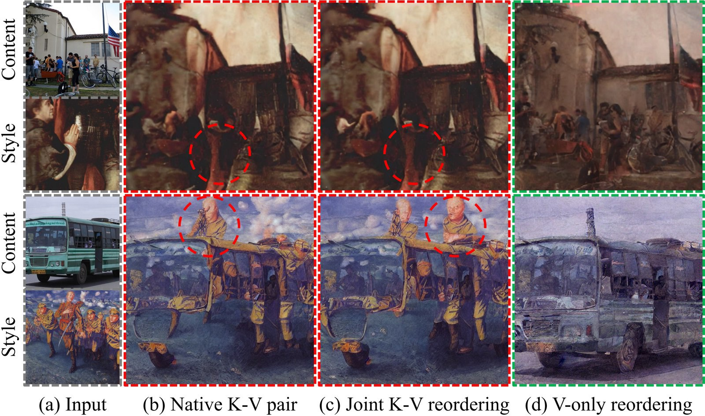
Why K–V pairing matters. Both native K–V pairing and joint K–V reordering preserve semantic leakage from the
style reference. In contrast, reordering only the values suppresses semantic leakage but weakens style transfer,
revealing the key trade-off that SuRe aims to resolve.
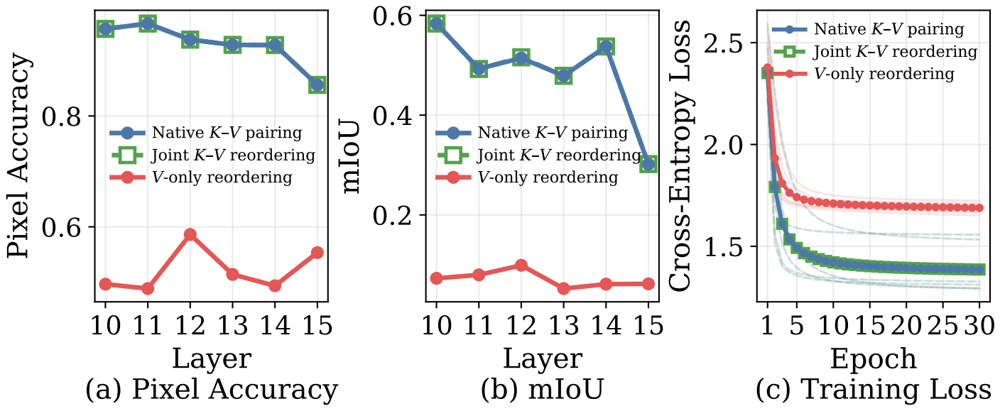
Linear probing evidence. Attention outputs under native pairing and joint reordering reach nearly identical
pixel accuracy and mIoU; value-only reordering drops both, showing that the coupling is what encodes style semantics.
02 Method
A timestep-aware schedule over the key–value correspondence.
SuRe never touches the pretrained weights. It only rewrites the attention target used to optimise a single
stylized latent, which is why it transfers to any latent diffusion backbone.
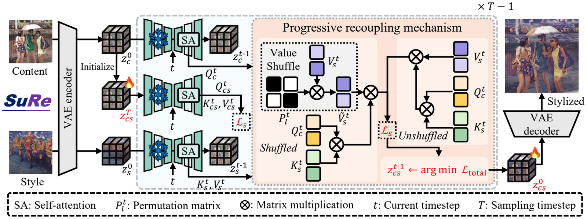
Overview. Content and style images are encoded into latents. V-Shuffle permutes the style value tokens while
keeping the style keys fixed. PRM then blends the shuffled and native attention targets over the sampling trajectory.
Step 1
V-Shuffle: break the correspondence, keep the distribution
Style values are randomly permuted along the spatial dimension while the keys stay untouched. Colour statistics
and texture priors survive; the one-to-one semantic association does not. Several independent permutations
average out, giving an unbiased Monte-Carlo estimate of the shuffled target.
Coarse layout is established early, high-frequency brushwork late. PRM therefore keeps strong uncoupling at
early timesteps and gradually returns to the native target, with a content-side regulariser that stops the
queries from drifting.
Why the schedule is time-dependent. PCA of style values extracted at different timesteps: coarse semantic
layouts appear in the first 30% of sampling, while high-frequency stylistic patterns only emerge in the last 30%.
03 Results
One formulation, four backbones.
On the standard benchmark (20 MS-COCO content images × 40 WikiArt style images, 800 outputs), SuRe improves
content similarity over 18 baselines while keeping style similarity competitive — and the same hyper-parameter
recipe carries over to SDXL, SD3 and FLUX.1-dev.
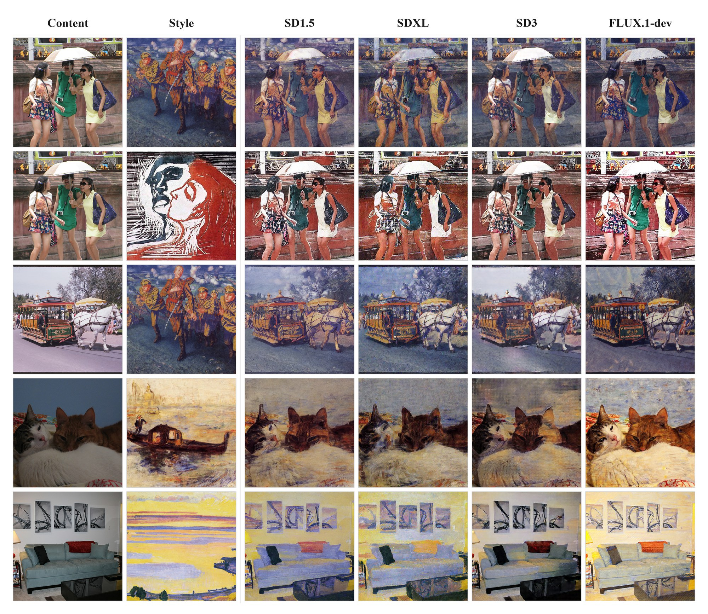
Across backbones. Five content/style pairs, stylized by SuRe on SD1.5, SDXL, SD3 and FLUX.1-dev. Only the
resolution and the self-attention layer range change between backbones.
Backbone
Resolution
Self-attn. layers
lr
β
m
Steps
SD1.5
512 × 512
10–16
0.05
0.24
5
200
SDXL
1024 × 1024
50–57
0.02
0.30
5
200
SD3
512 × 512
17–23
0.015
0.22
5
200
FLUX.1-dev
512 × 512
50–57
0.02
0.25
5
200
Per-backbone defaults; all of them are overridable from the command line. On SD1.5, SuRe reaches
21.71 ArtFID, 13.83 FID, 0.4620 LPIPS and 0.6459 DINOv2.
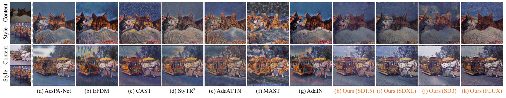
Against feed-forward methods (AesPA-Net, EFDM, CAST, StyTR2, AdaAttN, MAST, AdaIN). Existing methods drift in colour or structure; SuRe keeps both.
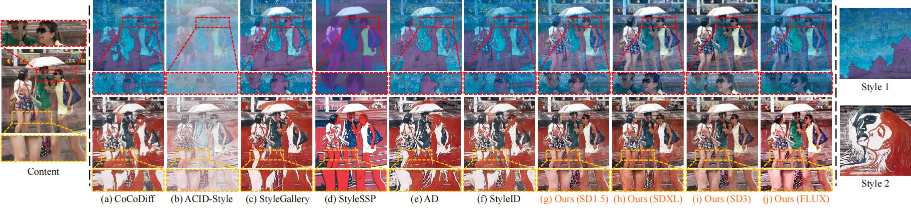
Against diffusion attention methods (CoCoDiff, ACID-Style, StyleGallery, StyleSSP, AD, StyleID). These still leak reference semantics to varying degrees; SuRe preserves faces and limbs.
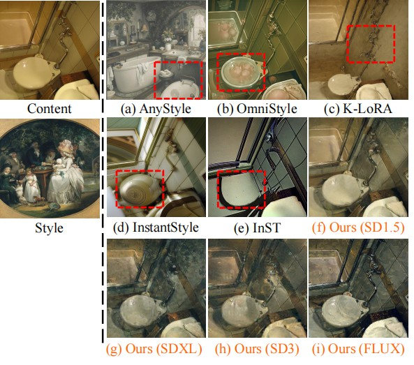
Against diffusion adaptation methods (AnyStyle, OmniStyle, K-LoRA, InstantStyle, InST), which tend to hallucinate layout changes.
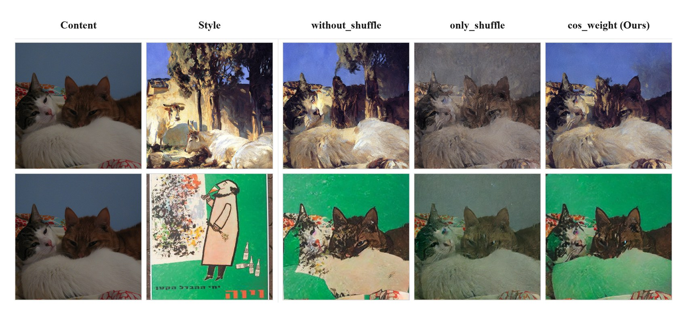
Effect of the coupling mode. Keeping the native pairing (without_shuffle) leaks the reference scene;
permuting values alone (only_shuffle) keeps colours but weakens the style; the cosine schedule
(cos_weight, the default) relieves the leak while retaining the style.
04 Multi-style transfer
More references, less leakage.
Passing a folder of references is enough: their keys and values are concatenated along the token dimension, so
the model transfers domain-level style rather than the content of any single image.
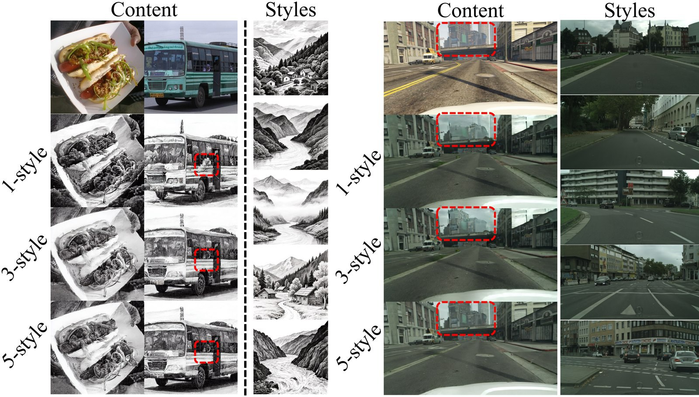
Few-style stylization. Going from one to several references of the same style domain reduces remaining
semantic leakage while keeping the shared palette and brushwork.
05 Ablations
Each control does real work.
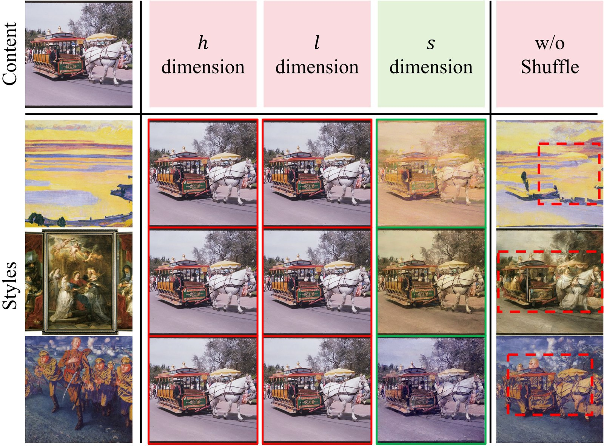
Shuffle dimension. Shuffling along the spatial dimension suppresses leakage while preserving style cues.
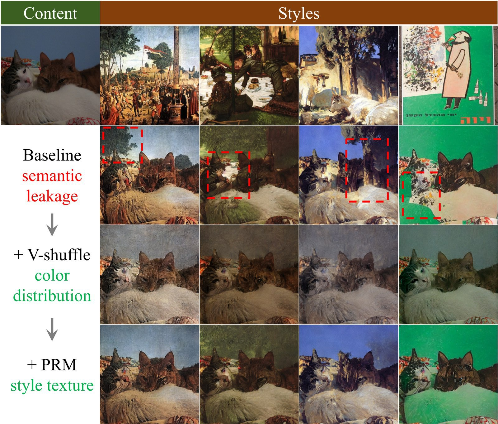
Components. V-Shuffle removes leakage and preserves colours; PRM restores the high-frequency stylistic texture.
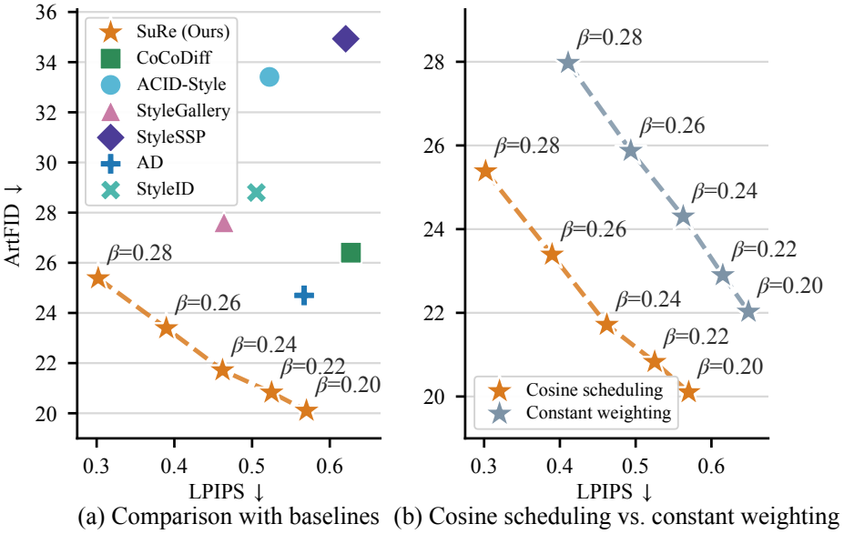
Ablation on different β and injection strategies. β controls the trade-off between the style loss
\(\mathcal{L}_s\) and the content loss \(\mathcal{L}_c\). (a) Across β values the SuRe curve stays in the
lower-left region relative to the baselines, i.e. lower ArtFID and lower LPIPS at the same time, which indicates a
better content–style Pareto frontier. (b) Compared with constant weighting, the cosine schedule dominates under every
β, confirming that the time-aware recoupling matters rather than the mere mixing of the two targets.
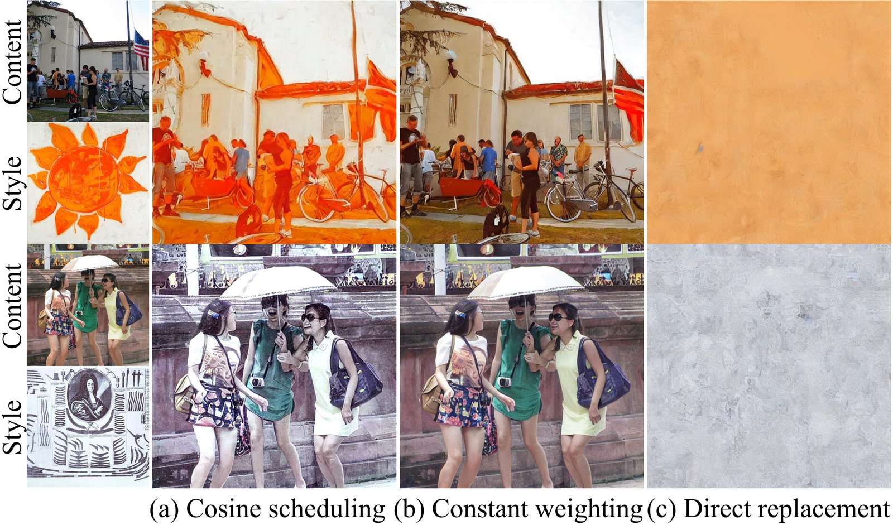
Visual comparison of different injection strategies. Constant weighting (COW) fixes \(\alpha_t = 0.5\) and
stylizes weakly because it ignores the sampling trajectory; direct replacement (DR) replaces the attention target with
the shuffled one, so it mainly transfers colour distributions and preserves little structure. SuRe keeps the loss-based
optimization, where the content loss constrains the semantic structure while PRM progressively regulates the style,
yielding more natural and visually pleasing results.
06 Citation
If SuRe is useful for your work…
@article{tang2025sure,
title = {Transfer the Style, Not the Semantics: Mitigating Semantic Leakage in Image-Guided Stylization},
author = {Tang, Haojun and Lin, Qiwei and Xu, Tongda and Zhao, Wenda and Zhao, Yian and Zhang, Yu and Huang, Lida and Wang, Yan},
journal = {arXiv preprint arXiv:2511.06365},
year = {2025}
}